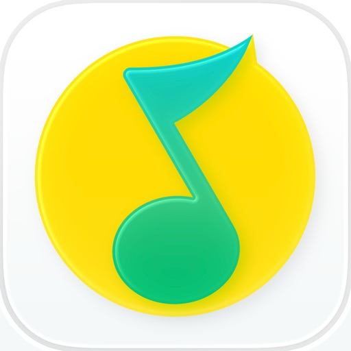
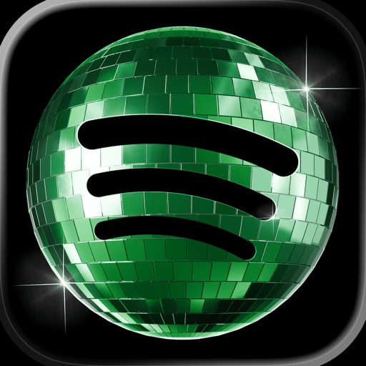

🎵 音乐流媒体
网易云音乐-数亿音乐畅听
Hangzhou Netease Cloud Music Technology Co., Ltd.
📊 4 国当前榜单排名📊 الترتيب الحالي في 4 أسواق
数据来源：Apple Marketing Tools RSS · 实时榜单 Top 100 المصدر: Apple Marketing Tools RSS · أحدث ترتيب Top 100
🇨🇳
中国الصين
免费榜المجاني #78
🇪🇬
埃及مصر
未进 Top 100خارج المئة الأولى
🇸🇦
沙特السعودية
未进 Top 100خارج المئة الأولى
🇺🇸
美国الولایات المتحدة
未进 Top 100خارج المئة الأولى
📈 排名历史趋势📈 اتجاه الترتيب التاريخي
基于 30 个时间点的数据 · 每天 06:00 / 22:00 自动更新بناءً على 30 نقاط زمنية · تحديث تلقائي يومياً 06:00 / 22:00
🇨🇳 中国الصين
免费榜المجاني
🇪🇬 埃及مصر
无进榜记录لم يدخل القائمة
🇸🇦 沙特السعودية
无进榜记录لم يدخل القائمة
🇺🇸 美国الولایات المتحدة
无进榜记录لم يدخل القائمة
📸 应用截图📸 لقطات الشاشة
📱 iPhone📱 iPhone


📝 应用描述📝 وصف التطبيق
产品介绍
看了就停不下来，全网超级热闹的歌曲评论区。真实情感故事、连载小说、硬核科普、趣味段子、文学金句、流行玩梗，你想得到想不到的乐评都在这了。
网易云音乐是当下十分受年轻用户喜爱的音乐平台之一。在网易云音乐，不仅可以听到海量正版音乐，还能遇见和你同样热爱音乐的伙伴。用音乐连接彼此，用音乐传递美好力量。
【海量曲库】
收录华语/欧美/日韩等众多语种歌曲，涵盖电音/说唱/摇滚/ACG/古风/古典等超全音乐种类。无论是热门歌手，还是小众音乐人，你都可以在这里找到。
【个性推荐】
超准智能算法比你更懂你，根据你的日常听歌喜好，将自动推荐给你感兴趣的歌曲。
【有声剧场】
快速充电的人生书库、精彩纷呈的推理悬疑故事、脑洞搞笑的热门小说、甜到停不下来的热门广播剧，超级还原的游戏原著，好听的小说都在这。
【精品播客】
音乐推荐、热门翻唱、情感树洞、真实故事……你想听的这里都有；解压、充电、助眠……满足你的所有需求；超千万声音库，给你7*24小时的耳边陪伴。
【品质歌单】
超34亿歌单库，邀你一起定制跑步、学习、工作、聚会等全场景音乐歌单。
【精彩乐评】
看了就停不下来，全网热闹歌曲评论区。真实情感故事、连载小说、硬核科普、趣味段子、文学金句、流行玩梗，你想得到想不到的乐评都在这了。
【趣味社区】
在云村，你不仅可以听音乐，还可以看音乐、聊音乐、玩音乐。音乐视频/一起听/动态/歌房
ℹ️ 基本信息ℹ️ المعلومات الأساسية
| 类别الفئة | Music |
| 版本الإصدار | 9.5.15 |
| 大小الحجم | 471.6 MB |
| 发布日期تاريخ الإصدار | 2013-01-24 |
| 更新日期تاريخ التحديث | 2026-05-19 |
| 价格السعر | 免费مجاني |
| 内容评级التصنيف العمري | 12+ |
| 支持设备数عدد الأجهزة المدعومة | 128 |
| 支持语言اللغات المدعومة | EN, ZH |
| Bundle ID | com.netease.cloudmusic |
| Track ID | 590338362 |
🌍 被发现在🌍 تم العثور عليه في
🇨🇳
中国الصين
搜索词كلمة البحث:
音乐201.7万 评分تقييم
🔍 同品类相似应用🔍 تطبيقات مشابهة في نفس الفئة

QQ音乐 - 听我想听
★ 4.62 · 213.0万 评分تقييم
酷狗音乐 - 就是歌多
★ 4.85 · 1432.5万 评分تقييم

Spotify: موسيقى وبودكاست
★ 4.66 · 41.3万 评分تقييم
Lark Player: Offline Music
★ 4.19 · 16 评分تقييم
SoundCloud - موسيقى و اغاني
★ 4.65 · 32.3万 评分تقييم